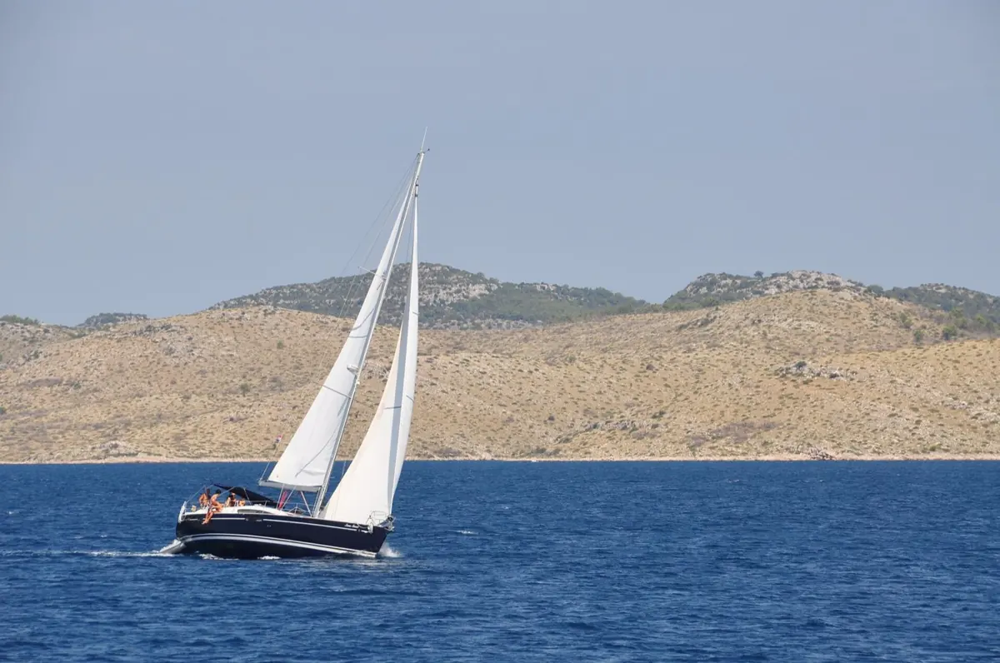

Tekne kiralama88kiralama bölgesi
Teknenin tamamı sizin
Dümen sizde ya da kaptanlı: yelkenli, katamaran ve motoryat. Ege'den Atlantik'e, rotayı siz çizersiniz.
- Türkiye (17): Bodrum, Marmaris, Göcek, Fethiye, Kaş, Kalkan, Kemer, Antalya, Datça, Didim, Kuşadası, Çeşme, Alaçatı, Ayvalık, İstanbul, Mersin, Sinop
- Avrupa: Yunanistan (11), İtalya (11), İspanya (10), Hırvatistan (9), Fransa (8), Portekiz (7), Karadağ (5), Malta (4), Monako
- Diğer: ABD (Miami, New York, Los Angeles, San Diego), Dubai
İlanlar:SamBoatSkipperCityViravira